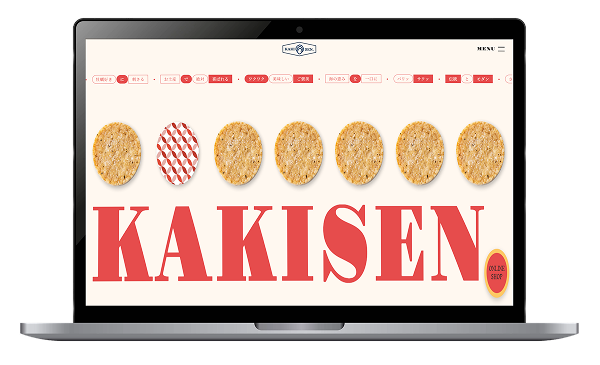

WORKS
制作物


新感覚の広島産牡蠣せんべい店『KAKISEN.』
広島県の名産である牡蠣を使用した架空の商品ブランド「KAKISEN.」の特設サイトをグループ制作で制作しました。
広島旅行のお土産として手に取りたくなる商品をテーマに、瀬戸内の海の恵みや素材の美味しさを感じられる世界観を表現しています。
また、伝統的なせんべい文化と現代的なデザインを掛け合わせることで、親しみやすさの中にも特別感のあるブランドイメージを目指しました。
広島県のお土産を探しているユーザーに向けて、商品の魅力やブランドの世界観を視覚的に伝え、商品の購入へ繋げることを目的として制作しました。
これまで商品を紹介する専用サイトが無かったため、特設サイトを制作することで商品の認知拡大やブランディング強化を図っています。
30代後半の主婦層
広島旅行を楽しみ観光客や広島県のお土産を探しているユーザー
具体的には、食べ歩きや地域限定グルメが好きで、特別感のあるご当地商品を求めている方向け。
また、牡蠣好きな方や、SNS映えするおしゃれなお土産・贈り物を探しているユーザーをターゲットとして想定しています。
大衆向けで現代的モダン
大見出し（欧文）：Gravitas One
見出し：Noto Serif JP
見出し（欧文）：Josefin Sans
本文：Noto Sans JP
広島らしい和の雰囲気と商品の特別感を表現するために、明朝体を中心としたフォント構成にしました。大見出しの「Gravitas One」でインパクトを演出し、「Noto Serif JP」で上品さや伝統感を表現しています。「Josefin Sans」でモダンな印象を加え、本文には「Noto Sans JP」を採用して読みやすさを意識しました。
広島の海の恵みや温かみのあるお土産らしさを表現するために、ベースカラーには牡蠣をイメージしたやわらかなクリーム色「#FFF8F0」を採用しました。
メインカラーには、広島の紅葉や地域らしさを感じられる朱色「#E64C4C」を採用し、サイト全体に華やかさと印象の強さを加えています。
また、アクセントカラーには親しみやすさや温もりをも感じる橙色「#FDCB6E」を取り入れ、明るく楽しい雰囲気を演出しました。
全体を温かみのある色味で統一することで、広島らしさと商品の美味しさが伝わるデザインを目指しています。
2025年10月
企画・構成：10時間
デザイン制作：20時間
コーディング：25時間
全7ページ
トップページ
ABOUT
PRODUCT
ONLINE SHOP
ACCESS
特定商取引法に基づく表示
プライバシー・ポリシー
Figma / Visual Studio Code / GitHub / Notion / jQuery